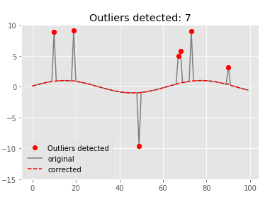

pycheron.rollseis.roll_median¶
-
roll_median(x, nwin=7, increment=1)[source]¶ Python version of roll_median function in seismicRoll R package
Can be utilized to replace outliers detected by the hampel function. Window size is interpeted as the full window length. Values within
n/2of the beginning or end of x are set to NA.Setting increment to a value greater than one will result in NAs for all skipped over values
Fast, center-aligned rolling medians algorithm
Parameters: - x (numpy.array) – input data
- nwin (int) – n integer window size
- increment (int) – increment integer shift to use when sliding the window to the next location
Returns: Returns vector of rolling median values of the same length as x
Return type: numpy.array
Example
from pycheron.rollseis.roll_median import roll_median from pycheron.rollseis.roll_sd import roll_sd from psd.noise.findOutliers import findOutliers import numpy as np # Create sinusoidal signal with outliers g =[] for i in range(1,101): g.append(np.sin(0.1*i)) # Create indices with outliers to detect g=np.asarray(g) ginds = [10,19,49,67,68,73,90] for i in ginds: g[i] = g[i]*10 g_fixed = np.array(g) gm_fixed = np.array(g) # Find outliers with rolling_hampel filter # Parameters nwin = 7 threshold = 6 selectivity = None increment = 1 fixedThreshold = True outliers = findOutliers(g,nwin,threshold,selectivity,increment,fixedThreshold) #Apply rolling median for i in outliers: g_fixed[i] = roll_median(g,10,1)[i]
Plotting
# Using outputs from above example import matplotlib.pyplot as plt plt.plot(outliers,g[outliers],'ro', label= 'Outliers detected') plt.plot(g,color='grey',label='original') plt.plot(g_fixed,color = 'red',linestyle = '--',label = 'corrected') plt.plot(outliers,g[outliers],'ro') plt.ylim(-15, 10) plt.title('Outliers detected: %s'%(len(outliers))) plt.legend(loc='lower left')